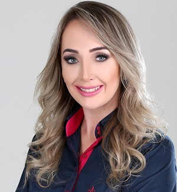
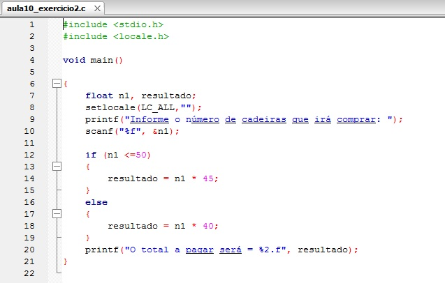
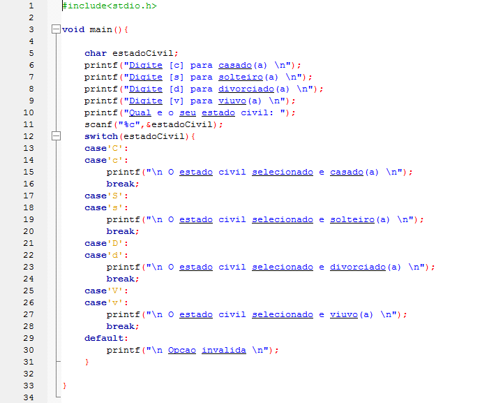
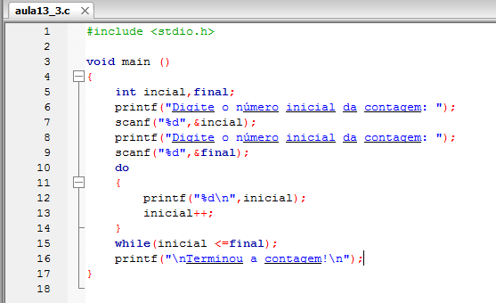

Profª Ligia Prete
Possui Graduação em Processamento de Dados pela Universidade Paulista (1999). Pós-Graduação Lato Sensu em Informática na área de concentração em Desenvolvimento de Sistemas sob a Tecnologia Cliente/Servidor e Internet pelo Centro Universitário de Rio Preto (2001). Licenciatura Plena em Informática pelo Programa Especial de Formação Pedagógica de Docentes para as Disciplinas do Currículo da Educação Profissional de Nível Médio do Centro Estadual de Educação Tecnológica Paula Souza (2008). Pós-Graduação Stricto Sensu (Mestrado) em Engenharia Elétrica na área de concentração em Automação pela Universidade Estadual Paulista Júlio de Mesquita Filho (2011). Pós-Graduação Stricto Sensu (Doutorado) em Engenharia Elétrica na área de concentração em Automação pela Universidade Estadual Paulista Júlio de Mesquita Filho (2016). Atualmente é docente do Centro Estadual de Educação Tecnológica Paula Souza (CEETEPS) na Faculdade de Tecnologia Professor José Camargo - Fatec Jales. Tem experiência na área de Ciência da Computação, com ênfase em desenvolvimento de sistemas, atuando principalmente nos seguintes temas: programação, banco de dados, redes e automação (Texto informado pelo autor).
Conceitos
Conceitos básicos sobre algoritmos e métodos para sua construção. Tipos de dados e variáveis. Álgebra booleana. Estruturas fundamentais de programas: sequencial, condicional e com repetição. Funções. Variáveis compostas homogêneas: vetores e matrizes.
Objetivos
Gerais
:Iniciar a formação em programação de computadores por meio de uma linguagem facilitadora do aprendizado de algoritmos, preferencialmente alguma uma linguagem de amplo emprego no mercado.
Específicos
:Desenvolver as habilidades básicas de programação de computadores aplicando os conceitos estudados.
Algoritmos e a Linguagem C
Os algoritmos são representados das seguintes formas: fluxograma(é uma descrição precisa e detalhada de um algoritmo, feita numa notação que combina elementos gráficos e textuais), pseudocódigo (é a lógica do seu programa escrita na linguagem nativa, ele não é uma linguagem de programação, é simplesmente uma maneira de representar a lógica de programação), descrição narrativa (forma de representação, pode ser utilizada quando queremos descrever um algoritmo de forma que o receptor da informação entenda do assunto mesmo não conhecendo de algoritmos). Na sala de aula, utilizamos nas aulas práticas os pseudocódigos por meio da linguagem C, um tipo de linguagem de programação de fácil entendimento e uma das mais populadores do mundo, e que é usada para desenvolvimento de novas linguagens, entre elas a linguagem C++ e Java.
Exemplos
Estrutura Condicional - If
O "if" é usado para avaliar uma ou mais condições: A condição é avaliada; Se o resultado da condição é VERDADEIRO, executa a instrução1; Senão sendo o resultado da condição FALSO, executa a instrução2.
Estrutur Condicional - Switch
A instrução switch adapta-se à tomada de decisões em que o número de possibilidades é elevado (em geral maior que 2, se não usa-se o if .. else), de forma a reduzir a complexidade de if .. else consecutivos e encadeados. Na sintaxe do switch, a expressão representa qualquer informação cujo resultado seja um valor numérico dos tipos char, int ou long. A expressão é avaliada e, em seguida, o switch compara o resultado da expressão com o valor de cada constante que segue em cada um dos case.
Estrutura de Repetição - While
A técnica denominada estrutura de repetição ou laço de repetição, é uma estrutura de programação que facilita repetir determinados trechos de código. Essa técnica reduz o trabalho de programação, principalmente quando é preciso repetir várias vezes alguma ação importante no programa.
A estrutura de repetição faz a verificação da condição para executar as instruções subordinadas de um bloco adjacente após conferir a validade do resultado lógico de uma condição estabelecida. Sendo o resultado lógico da condição verdadeiro, são executadas as instruçõessubordinadas do bloco adjacente. No momento em que o resultado lógico da condição não é mais verdadeiro, o laço de repetição é automaticamente encerrado.

Estrutura de Repetição - do While
A estrutura de repetição do .. while realiza o teste da condição no final do corpo do laço (instrução ou bloco de instruções) e não antes, como acontece com o laço while. Dessa forma o corpo do laço do .. while é executado pelo menos uma vez, enquanto no laço while o corpo do laço pode nunca ser executado (caso acondição seja falsa).
Estrutura de Repetição - For
A estrutura de repetição for adapta-se particularmente a situações em que o número de iterações é conhecido. A instrução para .. faca (algoritmo) e for (Linguagem C) executa uma instrução ou bloco de instruções enquanto uma determinada condição for verdadeira.
O seu funcionamento seguem os passos:
1. A variável é inicializada com um valor em cargas iniciais;
2. A condição é avaliada;
3. Se o resultado da condição for falso, então o laço for termina e o programa continua na instrução imediatamente a seguir.
4. Se o resultado da condição for verdadeiro, então é executada a instrução (ou bloco de instruções) do laço;
5. Depois de executada a instrução presente no laço, é executada a pós-instrução. Nesse componente do laço for são realizadas as alterações para passar à próxima iteração do laço;
6. Volta ao ponto 2.